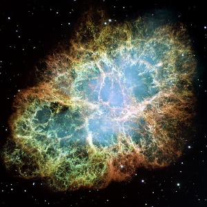

Астрономія
Астроно́мія (грец. αστρον — зоря і νομος — закон) — одна з найдавніших наук, що містить спостереження і пояснення подій, які відбуваються за межами Землі та її атмосфери.
Вона вивчає походження, розвиток, властивості об'єктів, що спостерігаються на небі (і перебувають поза межами Землі), а також процеси, пов'язані з ними. Цю науку ще називають космологією або зорезнавством.
Астрономи досліджують зорі, планети і їхні супутники, комети і метеоритні тіла, туманності, зоряні системи і речовину, що заповнює простір між зорями і планетами, в якому б стані вона не перебувала.
Дані про будову і розвиток небесних тіл, про їх положення і рух у просторі дають змогу отримати уявлення про будову Всесвіту в цілому.
Джерела
Астрономія